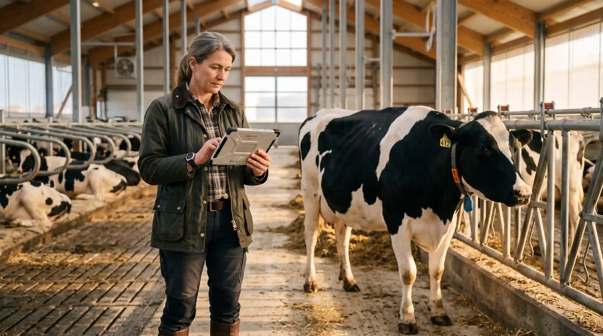
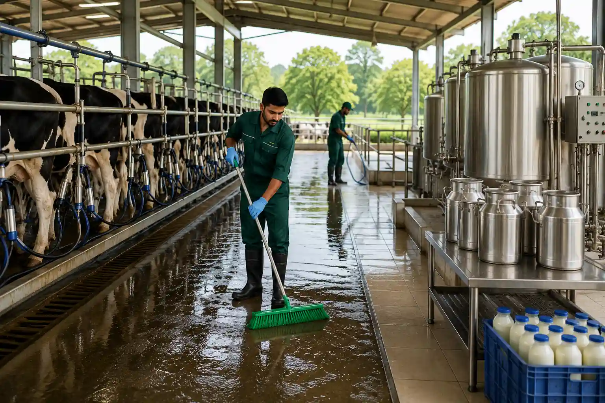
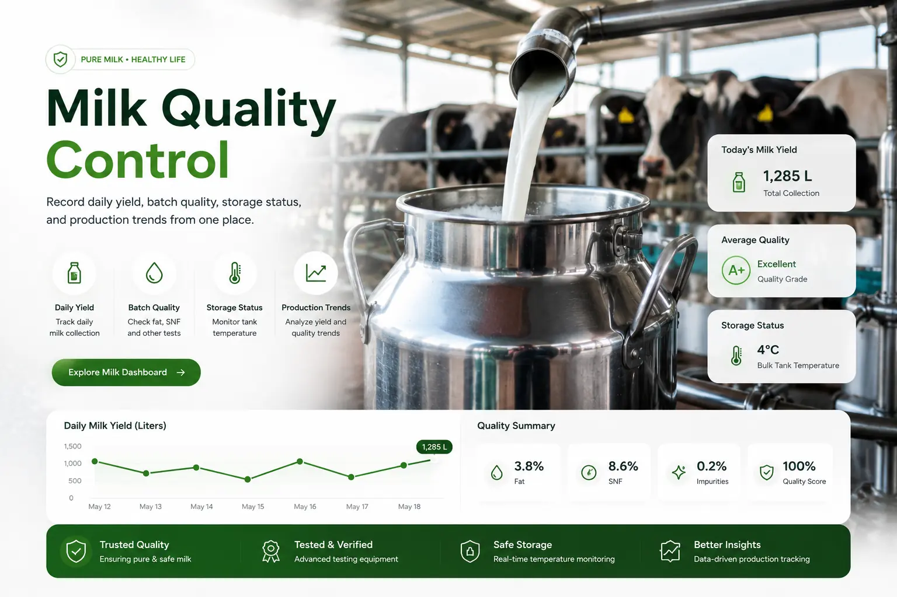
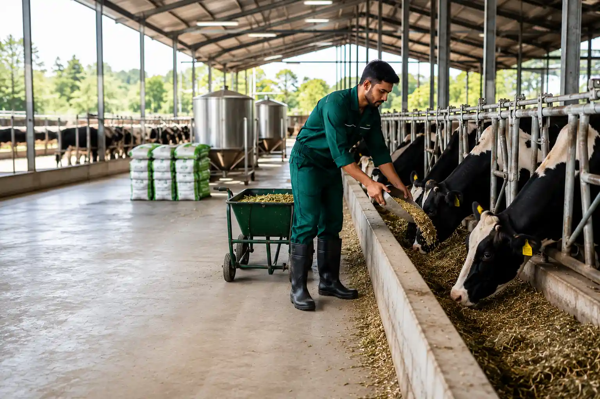
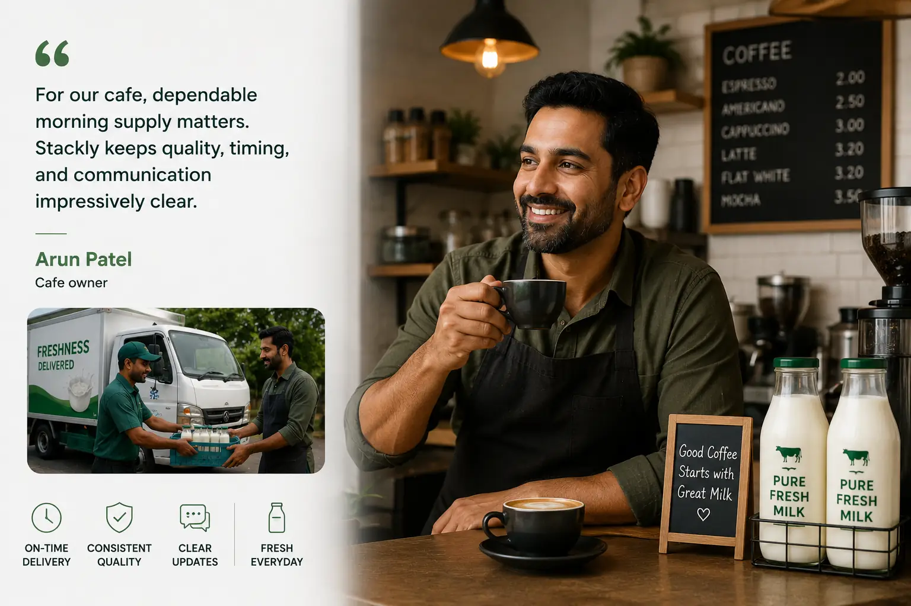
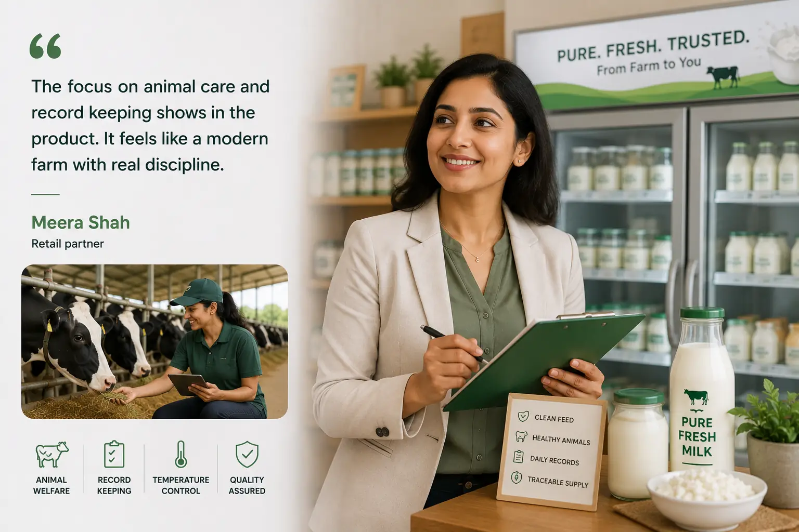

Healthy Cows
Natural Farming + Healthy Future
Pure Milk
Pure Life
We are committed to providing fresh, natural and healthy milk from our happy cows to your family. Experience the purity in every drop.
Liters Milk / Day
Years Experience
Happy Customers
About Stackly
Pure milk starts with healthy cows and careful farm management.
Stackly brings herd care, milk production, feed planning, and quality checks into one calm, reliable farm system built for daily dairy operations.
Our farm focuses on clean sheds, balanced nutrition, regular health checks, and careful milk handling from collection to storage. Every record helps the team protect animal comfort, improve yield, and deliver fresh dairy products with dependable quality.

Healthy Herd Care
Track cow profiles, breeding stages, vaccinations, and vet visits with clear daily records.
Milk Quality Control
Record daily yield, batch quality, storage status, and production trends from one place.

Clean Farm Operations
Manage feed, staff tasks, hygiene routines, and daily farm reports with confidence.
- Fresh feed planning and stock visibility
- Daily milking records and batch traceability
- Vaccination, treatment, and vet visit reminders
- Clean storage practices for premium dairy quality
500+ healthy cows
12K+ liters daily
25+ years care
Premium services
Enterprise tools for every farm unit.
 CM
CMCow Management
Profiles, lactation stages, breeding, and welfare observations.

MPMilk Production
Daily collection records, batch quality, and yield performance.
 AH
AHAnimal Health
Vaccination schedules, vet visits, and treatment history.
 FM
FMFeed Inventory
Stock, consumption, cost, supplier, and reorder visibility.
Farm features
Precision care from pasture to premium milk.
Connect livestock care, production, staffing, weather, and reporting so managers can make faster decisions with confidence.
- Automated milk collection summaries
- Veterinary and vaccination reminders
- Employee task boards and reports
- Quality control and batch traceability
Gallery preview
Modern agriculture, naturally managed.
Open grazing zones
Clean movement areas help cows stay calm, active, and comfortable through the day.

Balanced farm nutrition
Feed routines are planned around stock levels, seasonal growth, and herd requirements.
Daily livestock tracking
Every cow profile supports better breeding, health, lactation, and productivity decisions.
Quality-led operations
From shed hygiene to milk storage, each step is managed for dependable dairy quality.
Daily workflow
Every day is managed with care, timing, and clean records.
Morning Health Check
Teams review animal comfort, shed hygiene, feed access, and overnight observations before milking starts.
Fresh Feed Planning
Balanced rations are prepared from inventory records so every group gets the right nutrition at the right time.
Milking And Testing
Milk is collected in calm routines, checked for quality, and recorded by batch for dependable traceability.
Cold Storage Dispatch
Fresh milk moves into clean storage quickly, with dispatch notes ready for delivery and quality review.
Fresh dairy promise
Built for families, cafes, and farms that care about freshness.
From animal welfare to temperature control, each step is designed to protect natural taste, nutrition, and trust.
Fresh Milk
Collected daily, quality checked, and handled through clean storage routines.
Curd And Yogurt
Made from carefully handled milk with attention to texture, taste, and consistency.
Butter And Ghee
Prepared with a focus on rich flavor, clean processing, and batch accountability.
Farm Supply
Reliable dairy supply support for local stores, kitchens, and regular customers.
Quality assurance
Every batch is checked before it leaves the farm.
Clean dairy depends on calm handling, quick cooling, hygienic storage, and records that make every batch easy to trace.
- 01Collection hygieneMilking equipment, containers, and storage areas are checked before each production cycle.
- 02Temperature controlFresh milk is cooled quickly and monitored through storage so freshness is protected.
- 03Batch traceabilityEach collection is linked with timing, quantity, quality notes, and dispatch details.
Quality checked from collection to dispatch
Clean testing, cooling, storage, and delivery records in one dependable workflow.
Sustainable care
Better routines for animals, people, and land.
Stackly keeps daily farm work visible so teams can reduce waste, protect herd comfort, and make decisions from reliable records.
Batch visibility
Production notes, quality checks, and dispatch records stay connected from collection to delivery.
Daily checks
Morning, afternoon, evening, and storage reviews help the team catch issues early.
Less waste
Feed planning and stock visibility help reduce over-ordering and missed reorder points.
Fresh handling
Collection, cooling, storage, and dispatch are organized around fast, clean movement.
Customer trust
Trusted by people who depend on clean dairy every day.
"The milk quality is consistent, fresh, and easy to trust. Their farm updates make the whole process feel transparent."
Priya MenonHome customer
"For our cafe, dependable morning supply matters. Stackly keeps quality, timing, and communication impressively clear."
Arun PatelCafe owner
"The focus on animal care and record keeping shows in the product. It feels like a modern farm with real discipline."
Meera ShahRetail partner
How daily milk records improve herd planning
Turn collection data into breeding, feed, and quality decisions.
Read MoreCreating a calm vaccination calendar
Reduce missed treatments with clear schedules and reminders.
Read More
Premium milk starts before collection
Monitor hygiene, storage, and batch checks at each stage.
Read MoreCommon questions
Helpful answers before you visit or order.
How is milk freshness maintained?
Milk is collected in clean routines, quality checked, cooled quickly, and moved through controlled storage before dispatch.
Can cafes and stores request regular supply?
Yes. The farm supports recurring supply planning with clear quantity, timing, and quality records.
How are animal health records managed?
Each cow profile can track vaccinations, vet visits, breeding notes, feeding plans, and production history.
What makes Stackly different?
The farm combines everyday dairy discipline with structured records, making care, production, and quality easier to verify.
Ready to bring cleaner dairy operations into one place?
Start with better records for herd care, milk quality, staff routines, and customer-ready reports.